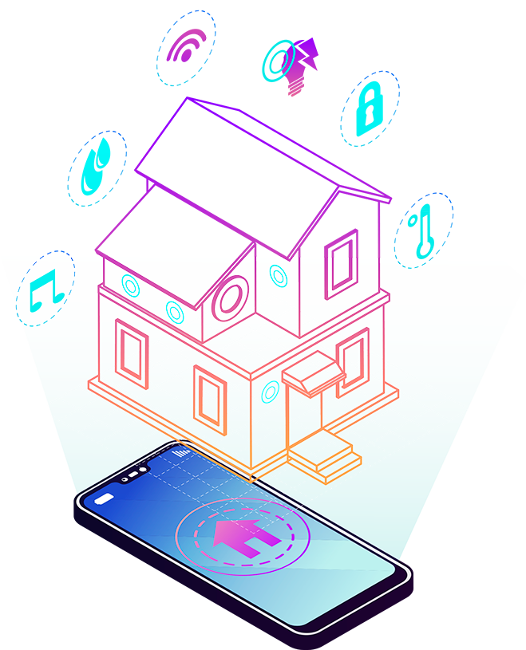
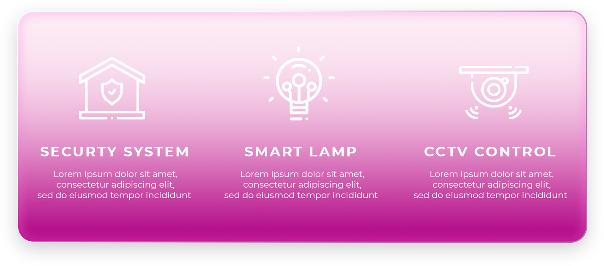
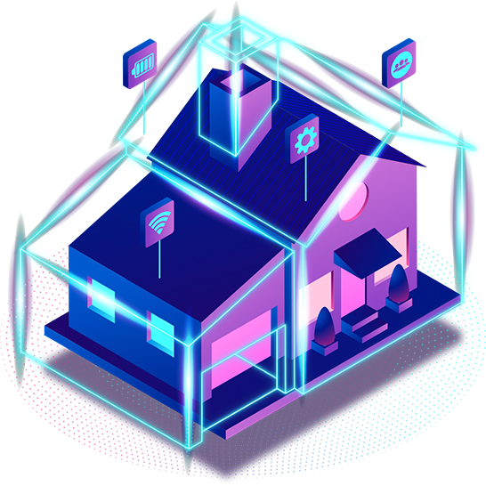

УМНЫЙ ДОМ
В современном мире технологии быстро развиваются и делают жизнь человека удобнее. Одной из таких технологий является умный дом. Это система, которая объединяет разные устройства и позволяет автоматически управлять ими с помощью интернета, датчиков или голосовых команд. Умный дом помогает контролировать освещение, отопление, бытовую технику и безопасность жилья. Например, можно удалённо включить свет, проверить камеры наблюдения или настроить температуру в комнате через смартфон.

В умный дом входят:
Преимущества умного дома:
